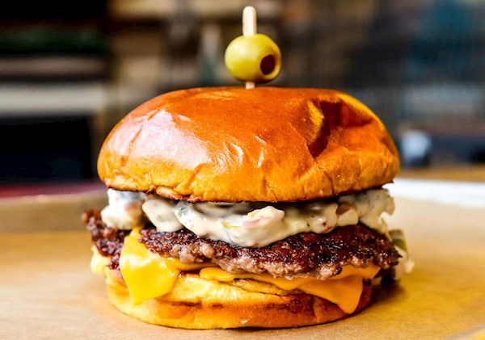

Home

Description
Ingredients:
- 4 ounces cream cheese, softened
- 1/4 cup mayonnaise
- 1/2 cup sliced green olives with pimientos
- 1 tablespoon olive brine
- 1 tablespoon cherry pepper hoagie spread
- 1 1/4 pounds ground beef
- salt and freshly ground black pepper to taste
- 4 slices Swiss cheese
- 4 hamburger buns
- 1 cup chopped iceberg lettuce
Steps:
- Stir cream cheese and mayonnaise together in a bowl until well combined. Stir in olives, brine, and cherry pepper spread. Set aside or refrigerate until ready to use.
- Shape beef into 4 patties and season with salt and pepper.
- Heat a large skillet over medium-high heat. Add patties and cook, undisturbed, until browned, about 4 minutes. Flip and reduce heat to medium. Cook until an instant-read thermometer inserted into the center should reads at least 160 degrees F (70 degrees C), 3 to 4 minutes. Top with cheese and allow cheese to melt.
- Place patties on bottom bun. Top liberally with olive spread. Add lettuce and top bun and serve immediately